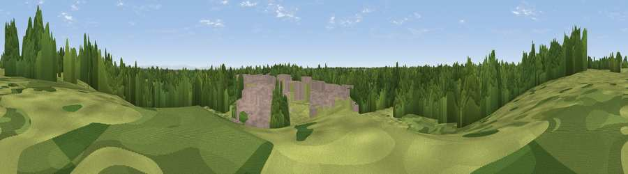

Viewpoint near Lowton Common
#27386 in England · top 72% of its area beats it · near Lowton CommonThe view, rendered

A 360° render of this exact spot computed from the terrain model, tree cover and land cover — summer colours, afternoon light, calibrated against photographs of famous viewpoints. Real trees, hedges and buildings will differ in detail.
The panorama
Grey silhouette: terrain skyline in each direction (720 bearings, Earth curvature and refraction included). Dashed green: skyline with trees (+15 m) and buildings (+8 m) as obstacles. Blue strip: how far the ground is visible on each bearing.
Where the view opens
Wedge length = distance to the farthest visible ground on that bearing (vegetation-aware). Rings at 10, 25 and 50 km.
What fills the view
37% woodland · 37% grassland · 24% built-up · 1% cropland
Angular shares of the visible panorama (visual magnitude), not map area. Landscape diversity 0.51 (0–1 Shannon).
Key numbers
More beautiful places nearby
The staircase of upgrades: each row has a higher view potential than everything closer. Driving times are estimates from straight-line distance, calibrated against real road routing — check an actual route before setting out.
| Place | Direction | Drive | Score |
|---|---|---|---|
| Viewpoint near Hag Fold | NE · 6 km | ~13 min | 53.0 |
| Viewpoint near Culcheth | SSE · 7 km | ~15 min | 63.6 |
| Viewpoint near Billinge | W · 10 km | ~19 min | 68.0 |
| Billinge Hill | W · 11 km | ~20 min | 73.8 |
| White Brow | NNE · 13 km | ~23 min | 82.9 |
| Warton Crag | NNW · 74 km | ~98 min | 83.2 |
| Viewpoint near Grange-over-Sands | NNW · 82 km | ~106 min | 83.4 |
| Viewpoint near Cartmel | NNW · 84 km | ~108 min | 87.0 |
53.49621, -2.55782 · source: osm viewpoint · position refined by local search. Computed location — check access rights before visiting.